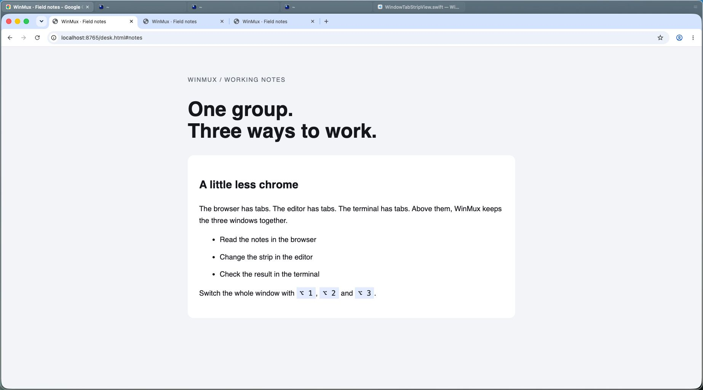
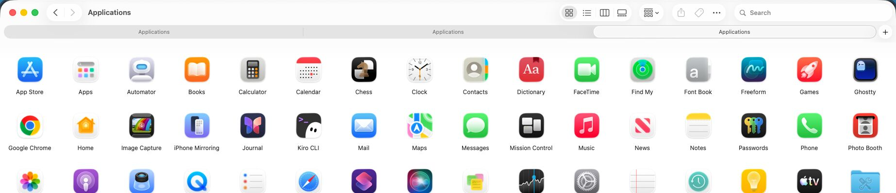
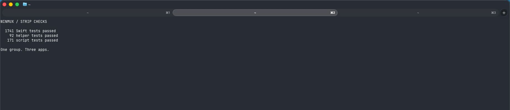

Three apps, each with tabs of its own. How much space should their WinMux group take?
These are CSS strips over real guest captures. Nothing here changes WinMux. Start with the native baseline, then switch the same window between four looks.
Fidelity limit: animation curves, blur and vibrancy, exact font rendering, scroll fades and close-button hover timing are approximations. The comparisons concern space, discoverability and drag targets.
The 36-point WinMux strip sits directly above the app. Each picture opens its full-resolution crop. Ghostty exposes its three native tabs as three WinMux windows: this group has five entries across three apps. Switch the state to inspect the grip, tab hover or Option hints.

| Element | Points / value | Evidence |
|---|
The same app and grip switches update every stage. Click a stage to work with that look below. The held look is shown at rest here; hold Option to reveal it.
Keep pointer access and the visible group relationship. Save 12 points, remove the pills and surrounding frame, and use the gutter or sidebar header to drag the group.
Finder and ungrouped Ghostty each have three native window tabs. These are live captures, with no WinMux strip. The app’s own title chrome remains part of each app.


Without a grip: Today and Thin retain empty strip space and the 28-point trailing gutter as whole-group drag targets. Held can use those while revealed; at rest it uses the sidebar header. Sidebar uses that header only. The native sidebar header already drags a whole group.
Without a strip at rest: Held needs Option or sidebar hover to expose membership and pointer tab selection. Sidebar always needs rail hover. The collapsed native rail shows only the workspace number, so neither communicates the group while collapsed.
Beside a browser: Thin leaves two rows, but separates the app tabs from the quieter group labels. Held and Sidebar remove the duplicate row at rest, trading away immediate group visibility. Neither puts WinMux tabs into an app’s title bar.
Height is a feature change: the config parser rejects 20 or less, and the runtime floors every accepted height at 36. The 24-point look needs the runtime floor changed. A future feature reuses the existing hint reducer/controller seam for the 500 ms reveal.
The sidebar prototype has since shipped as “The sidebar as a tree”. This page uses captures of that native sidebar. Orca is skipped because it is Prateek’s own tool and is not installable in this guest.